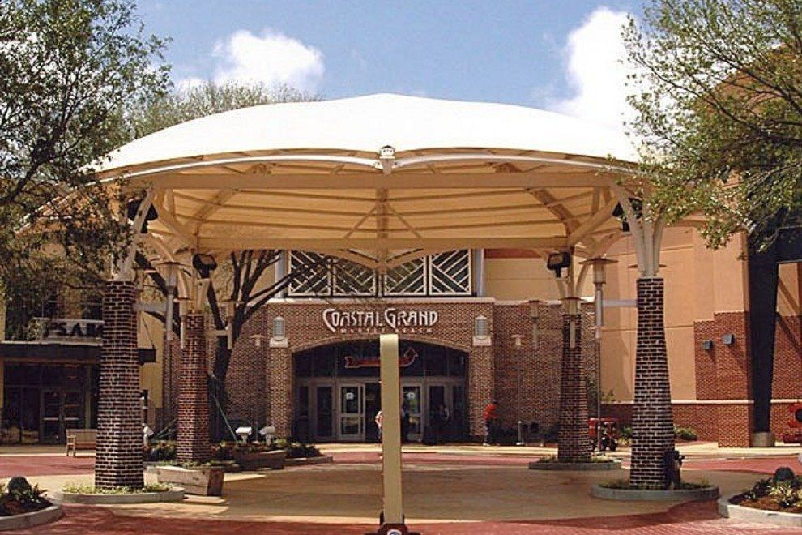

Haley's Food Fusion started out as a small restaurant located in Myrtle Beach, SC in Carolina Forest right off of 501. It is the mission and goal of the Food Fusion restaurant to provide a variety of foods to our customers and be a one stop shop. Any kind of food you are in the mood for, we hope to be able to provide.
We now have another location in Myrtle Beach, SC right near the Coastal Grand Mall. With two locations, we hope to still provide the same strong customer service that our restaurant firmly believes in!
